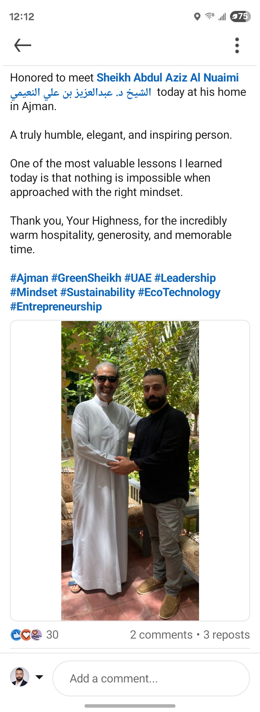

Compliance first
We align field work with the requirements that matter to your facility, municipality and inspectors.
From Ajman to all seven UAE Emirates, ECO Environmental helps facilities keep their operations compliant, clean and ready for what comes next.


Founded in 2016 and headquartered in Ajman, ECO Technology Environmental Protection Services is an approved vendor of Ajman Municipality, accredited by Dubai Municipality and aligned with Abu Dhabi environmental requirements.
We work beyond one-off cleaning. Our teams help restaurants, hotels, industrial facilities, malls and maritime operations build dependable environmental routines — from grease trap compliance to marine tank cleaning and used cooking oil recovery.
Every visit is designed to leave a clear record: before-and-after photos, technician details, service timing, volume removed, compliance status and the next recommended action.
Our work sits at the intersection of environmental responsibility, operational discipline and practical service delivery.
We align field work with the requirements that matter to your facility, municipality and inspectors.
GoCanvas-ready documentation makes completed work visible, traceable and easy to review.
We build routines that reduce risk, improve resource recovery and keep operations moving.
Our work is shaped by the people and institutions building a cleaner, more resilient UAE. ECO has presented at the Ajman Environmental Conference and continues to develop practical digital compliance initiatives for the emirates.
Meet selected clients →
Clear standards help our teams deliver consistent outcomes across different facility types and emirates.